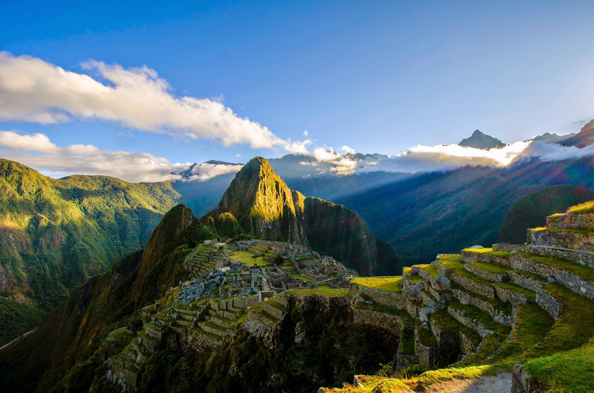

Fecha de publicación: 15/08/2009
Ubicación: Arequipa-Perú
El Valle Sagrado de los Incas, en los Andes peruanos, está compuesto por numerosos ríos que descienden por quebradas y pequeños valles; posee numerosos monumentos arqueológicos y pueblos indígenas.
Este valle fue muy apreciado por los incas debido a sus especiales cualidades geográficas y climáticas. Fue uno de los principales puntos de producción por la riqueza de sus tierras y lugar en donde se produce el mejor grano de maíz en el Perú.
En el Valle Sagrado de los Incas se diseminan hermosos pueblos coloniales que se crearon, y que hoy muestran su mestizaje en arquitectura, arte y cultura viva. Allí se encuentran los poblados de Chinchero y sus tejedoras, Písac y su feria artesanal, Urubamba y su cosmopolitismo, Ollantaytambo, con su fortaleza y su pueblo inca vivo. Y Maras Moray con sus deslumbrante Salinaras, en estos territorios, del Valle Sagrado, diversas comunidades han creado productos de turismo rural y Turismo vivencial que asombran a propios y extraños. Cada uno de ellos es un mundo en sí mismo, y en conjunto, componen una forma inédita de conocer la región más tradicional de los Andes sudamericanos.
Fecha de publicación: 20/09/2005
Ubicación: Lima-Perú
El cebiche, ceviche, sebiche o seviche (según la RAE, puede ser escrito de estas cuatro formas, dependiendo del lugar) es un plato que, en diferentes versiones, forma parte de la culinaria de diversos países latinoamericanos litorales del Océano Pacífico, como Chile, Colombia, Costa Rica, Ecuador, El Salvador, Guatemala, Honduras, México, Nicaragua, Panamá, Puerto Rico y Perú, en este último se lo considera como patrimonio cultural.
El Perú es un país en donde el ceviche es considerado por su población como parte de la identidad nacional, siendo un plato de amplio consumo sobre todo en el norte del país y además venerado como elemento central de su gastronomía, al punto de haber sido declarado formalmente como Patrimonio Cultural de la Nación y catalogado por los peruanos como el plato que mejor representa a su país. Su historia se remonta a épocas precolombinas. Al igual que en otros países, el plato es servido en un tipo de restaurante conocido como cevichería..
Fecha de nacimiento: 30/10/1967
Lugar de nacimiento: Lima-Perú
Es un reconocido chef, escritor, hombre de negocios y el más importante promotor de la gastronomía peruana. Desde la inauguración de su restaurante Astrid y Gastón en 1994 en Lima, Acurio ha abierto 34 restaurantes dedicados a diferentes especialidades de la comida peruana, en 11 países alrededor del mundo. En 2005 fue nombrado "Empresario del Año" por la revista América Economía – la revista de negocios más importante de Latinoamérica, y nombrado “Embajador de Buena Voluntad” por Unicef. Se hizo más famoso y querido en su país cuando en 2009 organiza la II Feria Gastronómica Internacional de Lima “Mistura 2009”. Ese mismo año fue considerado y nombrado por todos los medios como “El peruano del año”.